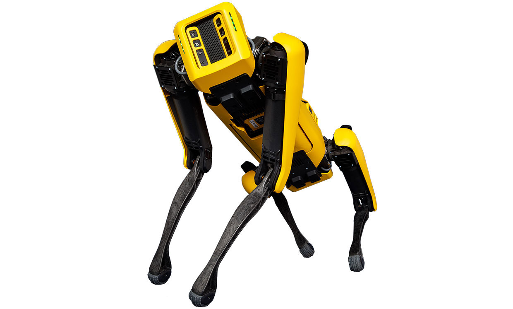
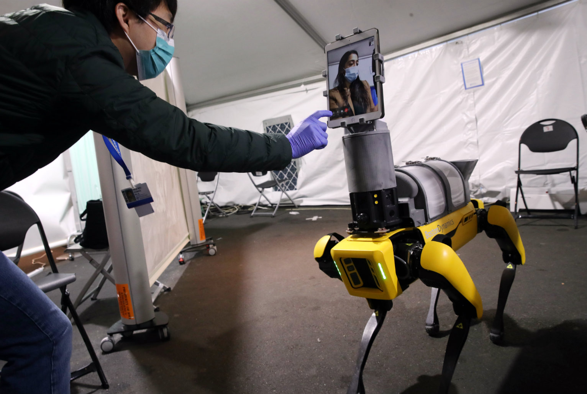

Boston Dynamics is a world leader in mobile robots, tackling some of the toughest robotics challenges. We combine the principles of dynamic control and balance with sophisticated mechanical designs, cutting-edge electronics, and next-generation software for high-performance robots equipped with perception, navigation, and intelligence. Boston Dynamics has an extraordinary and fast-growing technical team of engineers and scientists who seamlessly combine advanced analytical thinking with bold engineering and boots-in-the-mud practicality.
WHY DOES BOSTON DYNAMICS MAKE LEGGED ROBOTS?
Boston Dynamics focuses on creating robots with advanced mobility, dexterity and intelligence. We have long held that mobility sufficient to access both the natural and the built world required legs. We began the pursuit of this dream over 30 years ago, first in academia and then as part of Boston Dynamics because it was an exciting technical challenge and because to build a highly mobile robot required it. We wanted to build a robot that could go where people go. The commonly referred to “dull, dirty and dangerous” tasks don’t occur solely on a neatly organized factory floor, they pop up in the natural world and in existing infrastructure. These are places where being effective requires deftly maneuvering through rocky trails, staircases, catwalks, doors or narrow cluttered passages. The environment can’t be conformed to the machine, and therefore the machine must be capable in the environment as it comes. While we take the natural world as inspiration for our robots, the design is ultimately motivated by functionality. Our robots end up moving like humans and animals not because we designed them to look like humans and animals but because we made them balance. Balance and dynamic motion are characteristics we have previously only seen in animals. It is this organic quality of dynamically stable motion that people tend to associate with lifelike movement. Partly because of the benefits of dynamic motion, our robots can navigate tough unstructured, unknown or antagonistic terrain with ease. Wheeled and tracked robots are limited by stairs, gaps, ground-level obstructions such as cabling and staged materials and minor height differences in flooring. These environments don't present the same challenges for legged robots.
WHAT MAKES BOSTON DYNAMICS UNIQUE?
One of the things that makes Boston Dynamics unique is the ambition to build dynamically stable, legged machines. Marc Raibert began tackling this problem before anyone else in the world. And we’ve been at it since, almost 35 years. We’ve been inspired by and worked towards this goal for so long that we have invented techniques to make robots work that you can’t find in any textbook or technical article. The result is that we now know how to build walking machines of any size, shape, actuator style or powerplant. These unique designs enable our robots to conquer terrains inaccessible to others, and perform automated tasks in unstructured environments.
WHEN CAN I BUY A ROBOT?
Spot is available for commercial purchase via our shop page. You can contact our sales team about our Pick solution for box detection in warehouses. Handle, which is Boston Dynamics’ mobile robot for moving boxes in the warehouse, is scheduled to be available for commercial purchase in 2022. We currently do not have plans to commercialize Atlas, which is currently a research platform for us to explore some of the most difficult challenges in robotics design and control.
WILL YOUR ROBOTS BE MODIFIED FOR IN-HOME USE?
Spot is a powerful, 65 lb. industrial robot. It is intended for industrial and commercial use, by individuals with proper training who operate it in accordance with its user guide. This version is not intended for use in the home, or by children or others who cannot operate it responsibly. However, we may explore consumer-facing applications of a future variant of this robot as early as 2022.
WHERE ARE YOUR ROBOTS MADE?
Our robots are designed and perfected in our office in Waltham, Massachusetts and are made in the United States.
DO BOSTON DYNAMICS ROBOTS USE ARTIFICIAL INTELLIGENCE?
Spot uses a lot of intelligence to navigate the world. We call this “athletic intelligence”’ as the robot walks, climbs stairs, avoids obstacles, traverses difficult terrain and autonomously follows preset routes without constant input from users. Out-of-the-box, Spot has a very simple understanding of the world to enable it to walk more steadily - i.e. it can identify stairs, body obstacles, edges that might cause it to trip. Applications such as stopping an autonomous mission when a person is nearby or responding to voice commands can be added to the robot using our developer tools and payload ports.
ARE THERE ANY LIMITATIONS YOU PUT ON THE SALE OF YOUR PRODUCTS?
Our products - Spot and Pick - are available for sale for commercial, industrial, enterprise and university research uses. Customers who want to buy Spot directly via our website can purchase up to two robots. For larger orders, our sales team would like to speak with customers to better explore how Spot can help them. Currently we only offer sales to customers in the United States. We still offer lease options for a select number of markets overseas.
"9/9/2020"PRESS RELEAS
Boston Dynamics, the global leader in mobile robotics, expanded commercial sales of Spot, the agile robot that climbs stairs and traverses rough terrain with ease, to the European Union, United Kingdom and Canada. This follows the launch of commercial sales of Spot in the U.S., and builds upon a successful Early Adopter Program that saw a number of companies in both Europe and North America integrate the robot into their operations. LEARN MORE
"4/23/2020"BLOG POST
Healthcare providers need our help. In response, we've put together a preliminary robotic solution and sent Spot out to its first hospital to reduce the number of healthcare providers on the front lines. This first deployment of our mobile telemedicine platform enables providers to triage patients from afar, reducing risk to critical medical staff. To make it easier for healthcare workers to gain access to this technology, we’re open-sourcing all we’ve done and providing other mobile robotics companies the documentation and CAD files to implement this solution. LEARN MORE
